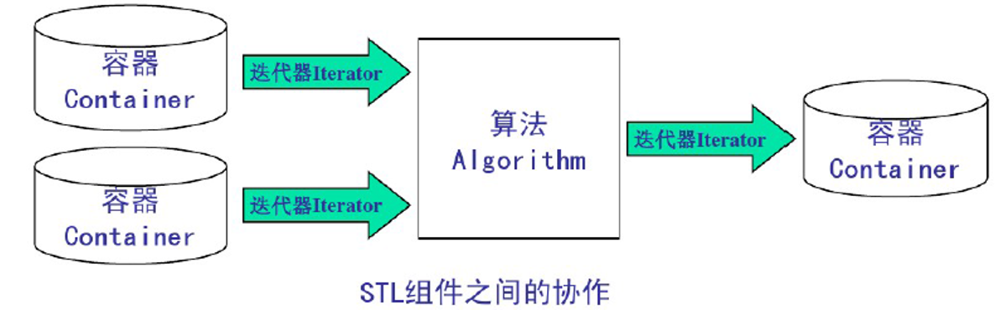
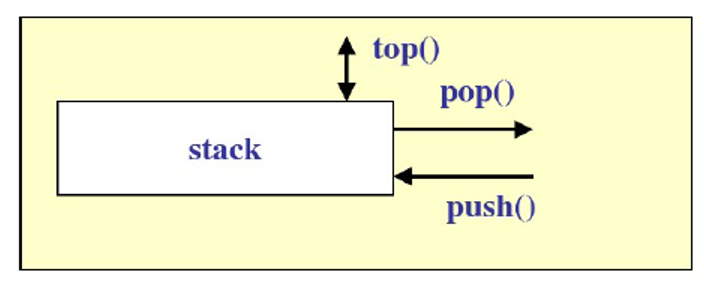

# STL
C++ 进阶学习 STL。
# STL 概述
# 什么是 STL
STL（Standard Template Library ），即标准模板库，是一个具有工业强度的，高效的 C++ 程序库；它被容纳于 C++ 标准程序库（ C++ Standard Library ）中，是 ANSI/ISO C++ 标准中最新的也是极具革命性的一部分；该库包含了诸多在计算机科学领域里所常用的基本数据结构和基本算法，为广大 C++ 程序员们提供了一个可扩展的应用框架， 高度体现了软件的可复用性。
STL 是最新的 C++ 标准函数库中的一个子集，这个庞大的子集占据了整个库的大约 80% 的份量。
# STL 基本组件
STL 主要由容器，迭代器和算法组成。

容器： 可容纳各种数据类型的数据结构；
迭代器： 可依次存取容器中元素的东西；
算法： 用来操作容器中的元素的函数模版。例如，STL 用 sort () 来对一个 vector 中的数据进行排序。
举例说明：数组 int array[100] 就是一个容器，而 int* 类型的指针就可以作为迭代器，可以为这个容器编写一个排序算法。
# Vector 容器
# 什么是 Vector 容器
Vector（向量）是一个封装了动态大小数组的顺序容器；跟任意其它类型容器一样，它能够存放各种类型的对象；Vector 是用动态数组来实现的。
在使用 Vector 的时候需要包含头文件和使用命名空间：
#include <vector> | |
using namespace std; |
Vector 支持随机存取，它有大小（size）和容量（capacity）两个属性，大小（size）就是实际元素的个数，容量（capacity）表示能容纳元素最大的数量，如果插入元素时，元素个数超过容量大小，则需要重新配置内部存储器。
# 使用 Vector 容器
# 构造容器
// 构造容器 | |
vector<int> v1; // 空的容器，里面没有元素 | |
vector<int> v2(100); // 100 个容器，默认数据都为 0 | |
vector<int> v3(100, 8); // 100 个值为 8 的元素 | |
vector<int> v4(v3); // 100 个值为 8 的元素 | |
int nTmpAry[] = { 20,21,22,23,24,25,26,27,28,29,30 }; | |
vector<int> v5(nTmpAry + 1, nTmpAry + 5); // 从 nTmpAry 数组中索引为 1 开始，到到数组索引为 5 为止，复制这个区间内数组的元素到容器中 |
# 添加元素
Vector 添加元素的函数有：push_back() ： 每次都添加到了容器的尾部insert() ：添加到指定位置
// 添加元素 | |
for (size_t i = 0; i < 10; i++) | |
{ | |
v1.push_back(i); // 每次都添加到了容器的尾部 | |
} | |
// 添加到指定位置、 | |
// 在容器首部添加一个值为 99 的元素 | |
v1.insert(v1.begin(), 99); | |
// 在容器第 3 个位置处插入 2 个 98 | |
v1.insert(v1.begin() + 3, 2, 98); | |
// 在容器首部添加数组 nTmpAry 索引为 6 到 9 区间内的元素到容器中 | |
v1.insert(v1.begin(), nTmpAry + 6, nTmpAry + 9); | |
// 打印 | |
for (size_t i = 0; i < v1.size(); i++) | |
{ | |
printf("%d\t", v1[i]); | |
} |
# 删除元素
Vector 删除元素的函数有：pop_back() ： 删除尾部元素。erase() : 删除指定位置的元素，也可删除多个元素。
// 删除元素 | |
// 删除尾部元素 | |
v1.pop_back(); | |
printf("\n=============pop_back删除=======\r\n"); | |
for (size_t i = 0; i < v1.size(); i++) | |
{ | |
printf("%d\t", v1[i]); | |
} | |
// 删除指定位置的元素 | |
v1.erase(v1.begin() + 3); | |
printf("\n=============erase删除=======\r\n"); | |
// 迭代器遍历 | |
vector<int>::iterator nIt = v1.begin(); | |
while(nIt != v1.end()) | |
{ | |
printf("%d\t", *nIt++); | |
} | |
// 删除多个元素，删除指定区间的元素 | |
v1.erase(v1.begin(), v1.begin() + 3); | |
printf("\n=============erase删除2=======\r\n"); | |
for (size_t i = 0; i < v1.size(); i++) | |
{ | |
printf("%d\t", v1[i]); | |
} |
# Deque 容器
# 什么是 Deque 容器
1.Deque 是 Double-Ended Queue 的缩写，是在首尾两端增删元素具有较佳性能的容器；
2.Deque 容器与 Vector 容器相似都是模拟动态数组，它们都是顺序容器，所有适用于 Vector 的操作都适用于 Deque；
3.Deque 还有 push_front 函数 (将元素插入到前面) 和 pop_front 函数 (删除最前面的元素) 操作（Vector 容器只有在尾部操作的方法，因此 Vector 适用于尾部的操作）。
# 使用 Deque 容器
首先需要包含头文件和使用命名空间：
#include <deque> | |
using namespace std; |
由于在 Deque 容器中适用所有 Vector 的操作，这里不过多赘述
下面附上以 deque 来实现上面 vector 的操作
// 构造容器 | |
deque<int> v1; // 空的容器，里面没有元素 | |
deque<int> v2(100); // 100 个容器，默认数据都为 0 | |
deque<int> v3(100, 8); // 100 个值为 8 的元素 | |
deque<int> v4(v3); // 100 个值为 8 的元素 | |
int nTmpAry[] = { 20,21,22,23,24,25,26,27,28,29,30 }; | |
deque<int> v5(nTmpAry + 1, nTmpAry + 5); // 从 nTmpAry 数组中索引为 1 开始，到数组索引为 5，复制这个区间内数组的元素到容器中 | |
// 添加元素 | |
for (size_t i = 0; i < 10; i++) | |
{ | |
v1.push_back(i); // 每次都添加到了容器的尾部 | |
} | |
// 添加到指定位置、 | |
// 在容器首部添加一个值为 99 的元素 | |
v1.insert(v1.begin(), 99); | |
// 在容器第 3 个位置处插入 2 个 98 | |
v1.insert(v1.begin() + 3, 2, 98); | |
// 在容器首部添加数组 nTmpAry 索引为 6 到 9 区间内的元素到容器中 | |
v1.insert(v1.begin(), nTmpAry + 6, nTmpAry + 9); | |
// 打印 | |
printf("====================v1的地址为：%p\r\n", &v1); | |
for (size_t i = 0; i < v1.size(); i++) | |
{ | |
printf("%d\t", v1[i]); | |
} | |
// 删除元素 | |
// 删除尾部元素 | |
v1.pop_back(); | |
printf("\n=============pop_back删除=======\r\n"); | |
for (size_t i = 0; i < v1.size(); i++) | |
{ | |
printf("%d\t", v1.at(i)); | |
} | |
// 删除指定位置的元素 | |
v1.erase(v1.begin() + 3); | |
printf("\n=============erase删除=======\r\n"); | |
// 迭代器遍历 | |
deque<int>::iterator nIt = v1.begin(); | |
while (nIt != v1.end()) | |
{ | |
printf("%d\t", *nIt++); | |
} | |
// 删除多个元素，删除指定区间的元素 | |
v1.erase(v1.begin(), v1.begin() + 3); | |
printf("\n=============erase删除2=======\r\n"); | |
for (size_t i = 0; i < v1.size(); i++) | |
{ | |
printf("%d\t", v1[i]); | |
} |
下面介绍一下 deque 的两个独有的函数 push_front 和 pop_front
/* | |
语法格式：void push_front (const T& x); | |
函数意义：将元素插入到首部 | |
*/ | |
v1.push_front(123); | |
/* | |
语法格式：void pop_front (); | |
函数意义：删除首部的元素 | |
*/ | |
v1.pop_front(); |
# List 容器
# 什么是 List 容器
List 容器是一个双向链表；
不支持随机存取，不支持 at.[pos] 函数和 [] 操作符；
List 容器除了具有所有顺序容器都有的函数以外，还支持以下函数：
push_front ：将元素插入到首部pop_front ：删除首部的元素sort ：排序 (list 单独实现)remove ：删除与指定值相等的元素unique ：删除所有和前一个元素相同的元素merge ：合并两个链表，并清空被合并的那个 (list 单独实现)，需要注意的是两个容器必须都是有序的，要么都是升序，要么都是降序，如果不一样会报错，合并后生成的表仍是有序的。reverse ：颠倒链表
# 使用 List 容器
List 容器具有所有顺序容器都有的函数，这里也不赘述那些函数了，但是有一个地方需要注意，就是 List 容器也没办法使用类似 v1.begin()+3 这种用法，如果你要使用的时候建议单独写一个函数：
list<int>::iterator MoveIterator(list<int>::iterator* pIt, int nLen) { | |
for (int i = 0; i < nLen; i++) { | |
(*pIt)++; | |
} | |
return *pIt; | |
} |
下面是全部代码：
// STL-03List.cpp : 此文件包含 "main" 函数。程序执行将在此处开始并结束。 | |
// | |
#include <iostream> | |
#include <list> | |
using namespace std; | |
list<int>::iterator MoveIterator(list<int>::iterator* pIt, int nLen) { | |
for (int i = 0; i < nLen; i++) { | |
(*pIt)++; | |
} | |
return *pIt; | |
} | |
int main() | |
{ | |
// 构造容器 | |
list<int> v1; // 空的容器，里面没有元素 | |
list<int> v2(100); // 100 个容器，默认数据都为 0 | |
list<int> v3(100, 8); // 100 个值为 8 的元素 | |
list<int> v4(v3); // 100 个值为 8 的元素 | |
int nTmpAry[] = { 20,21,22,23,24,25,26,27,28,29,30 }; | |
list<int> v5(nTmpAry + 1, nTmpAry + 5); // 从 nTmpAry 数组中索引为 1 开始，到数组索引为 5，复制这个区间内数组的元素到容器中 | |
// 添加元素 | |
for (size_t i = 0; i < 10; i++) | |
{ | |
v1.push_back(i); // 每次都添加到了容器的尾部 | |
} | |
list<int>::iterator v1b = v1.begin(); | |
// 添加到指定位置 | |
// 在容器首部添加一个值为 99 的元素 | |
v1.insert(v1.begin(), 99); | |
// 在容器第 3 个位置处插入 2 个 98 | |
v1.insert(MoveIterator(&v1b, 3), 2, 98); | |
// 在容器首部添加数组 nTmpAry 索引为 6 到 9 区间内的元素到容器中 | |
v1.insert(v1.begin(), nTmpAry + 6, nTmpAry + 9); | |
// 在容器首部添加元素 | |
v1.push_front(123); | |
// 打印 | |
printf("====================v1的地址为：%p\r\n", &v1); | |
// 迭代器遍历 | |
list<int>::iterator nIt = v1.begin(); | |
while (nIt != v1.end()) | |
{ | |
printf("%d\t", *nIt++); | |
} | |
// 删除元素 | |
// 删除首部元素 | |
v1.pop_front(); | |
printf("\n=============pop_front删除=======\r\n"); | |
// 迭代器遍历 | |
nIt = v1.begin(); | |
while (nIt != v1.end()) | |
{ | |
printf("%d\t", *nIt++); | |
} | |
// 删除尾部元素 | |
v1.pop_back(); | |
printf("\n=============pop_back删除=======\r\n"); | |
// 迭代器遍历 | |
nIt = v1.begin(); | |
while (nIt != v1.end()) | |
{ | |
printf("%d\t", *nIt++); | |
} | |
// 删除指定位置的元素 | |
v1b = v1.begin(); | |
v1.erase(MoveIterator(&v1b, 3)); | |
printf("\n=============erase删除=======\r\n"); | |
// 迭代器遍历 | |
nIt = v1.begin(); | |
while (nIt != v1.end()) | |
{ | |
printf("%d\t", *nIt++); | |
} | |
// 删除多个元素，删除指定区间的元素 | |
v1b = v1.begin(); | |
v1.erase(v1.begin(), MoveIterator(&v1b, 3)); | |
printf("\n=============erase删除2=======\r\n"); | |
// 迭代器遍历 | |
nIt = v1.begin(); | |
while (nIt != v1.end()) | |
{ | |
printf("%d\t", *nIt++); | |
} | |
/* | |
push_front ：将元素插入到首部 | |
pop_front ：删除首部的元素 | |
sort ：排序 (list 单独实现) | |
remove ：删除与指定值相等的元素 | |
unique ：删除所有和前一个元素相同的元素，就是去除重复元素，只留下一个 | |
merge ：合并两个链表，并清空被合并的那个 (list 单独实现) | |
reverse ：颠倒链表 | |
*/ | |
printf("\n=============sort排序=======\r\n"); | |
// 对 list 进行排序 | |
v1.sort(); | |
// 迭代器遍历 | |
nIt = v1.begin(); | |
// 也可用指针去取值 | |
printf("%d\r\n", *nIt+3); | |
while (nIt != v1.end()) | |
{ | |
printf("%d\t", *nIt++); | |
} | |
printf("\n=============remove删除=======\r\n"); | |
// 删除和指定值相等的元素 | |
v1.remove(8); | |
// 迭代器 ++ 与 * 迭代器 ++ p++ *p++ 为何功能一样？ | |
for (list<int>::iterator p = v1.begin(); p != v1.end(); *p++) | |
{ | |
cout << *p << "\t"; | |
} | |
printf("\n=============unique去重=======\r\n"); | |
// 去重 | |
v1.unique(); | |
for (list<int>::iterator p = v1.begin(); p != v1.end(); *p++) | |
{ | |
cout << *p << "\t"; | |
} | |
printf("\n=============merge合并=======\r\n"); | |
printf("\n=============merge_v5合并前=======\r\n"); | |
for (list<int>::iterator p = v5.begin(); p != v5.end(); *p++) | |
{ | |
cout << *p << "\t"; | |
} | |
// 合并两个链表 | |
v1.merge(v5); | |
printf("\n=============merge_v1合并后=======\r\n"); | |
for (list<int>::iterator p = v1.begin(); p != v1.end(); *p++) | |
{ | |
cout << *p << "\t"; | |
} | |
printf("\n=============merge_v5合并后=======\r\n"); | |
for (list<int>::iterator p = v5.begin(); p != v5.end(); *p++) | |
{ | |
cout << *p << "\t"; | |
} | |
printf("\n=============reverse颠倒=======\r\n"); | |
// 颠倒 | |
v1.reverse(); | |
for (list<int>::iterator p = v1.begin(); p != v1.end(); *p++) | |
{ | |
cout << *p << "\t"; | |
} | |
return 0; | |
} |
执行结果如下：
====================v1的地址为：0056F750 | |
123 26 27 28 99 0 1 2 98 98 3 4 5 6 7 8 9 | |
=============pop_front删除======= | |
26 27 28 99 0 1 2 98 98 3 4 5 6 7 8 9 | |
=============pop_back删除======= | |
26 27 28 99 0 1 2 98 98 3 4 5 6 7 8 | |
=============erase删除======= | |
26 27 28 0 1 2 98 98 3 4 5 6 7 8 | |
=============erase删除2======= | |
0 1 2 98 98 3 4 5 6 7 8 | |
=============sort排序======= | |
3 | |
0 1 2 3 4 5 6 7 8 98 98 | |
=============remove删除======= | |
0 1 2 3 4 5 6 7 98 98 | |
=============unique去重======= | |
0 1 2 3 4 5 6 7 98 | |
=============merge合并======= | |
=============merge_v5合并前======= | |
21 22 23 24 | |
=============merge_v1合并后======= | |
0 1 2 3 4 5 6 7 21 22 23 24 98 | |
=============merge_v5合并后======= | |
=============reverse颠倒======= | |
98 24 23 22 21 7 6 5 4 3 2 1 0 |
# Set/Multiset 容器
# 什么是 Set/Multiset 容器
- 底层使用平衡的搜索树：红黑树；
- 内部元素有序排列，新元素插入的位置取决于它的值，查找速度快；
- 支持通过键值实现快速读取；
- 不可以使用 at 函数与 [] 操作符；
- 不可以直接修改 set 或 multiset 容器中的元素值，因为该类容器是自动排序的，如果希望修改一个元素值，必须先删除原有的元素，再插入新的元素；
- multiset 支持同一个键多次出现的 set 类型。
# 使用 Set/Multiset 容器
在使用之前需要包含头文件和使用命名空间：
#include <set> | |
using namespace std; |
# 构造容器
构造容器的方法全在一个函数中实现了：
void SetConstructors() { | |
// 构建一个空的容器，默认使用的是小于比较器 less<int>，既从小到大排序元素 | |
set<int> set1; // set<int, less<int>> set; | |
// 构建一个空的容器，使用大于比较器，即从大到小排列。 | |
set<int, greater<int>> set2; | |
int nAry[] = { 10,11,12,13,14,15,16,17 }; | |
// 用数组区间初始化 | |
set<int,greater<int>> set3(nAry, nAry + 8); | |
cout << "set3:\t"; | |
// 打印 | |
for_each(set3.begin(), set3.end(), myPrintFun); | |
// 复制指定 set 容器的区间的内容作为容器的元素 | |
set<int> set4(set3.begin(), set3.end()); | |
cout << "\nset4:\t"; | |
// 打印 | |
for_each(set4.begin(), set4.end(), myPrintFun); | |
// 复制 set 容器 | |
set<int> set5(set4); | |
} |
其中要使用 for_each 函数，需要包含头文件 #include<algorithm> algorithm 头文件中是 STL 的一些算法。
# 添加元素
添加元素可以使用 insert 函数，具体操作如下：
void SetInsert() | |
{ | |
set<int> s; | |
s.insert(1); // 单个元素添加 | |
s.insert(22); | |
s.insert(13); | |
int nAry[] = { 10,11,12,13,14,15,16,17 }; | |
s.insert(nAry, nAry + 6); // 添加指定数组区间的值 | |
cout << "s:\n"; | |
// 打印 | |
for_each(s.begin(), s.end(), myPrintFun); | |
set<int> s2(nAry+6, nAry + 8); | |
cout << "\ns2:\n"; | |
// 打印 | |
for_each(s2.begin(), s2.end(), myPrintFun); | |
s.insert(s2.begin(), s2.end()); | |
cout << "\ns.insert:\n"; | |
// 打印 | |
for_each(s.begin(), s.end(), myPrintFun); | |
} |
需要注意的是 Set 容器不允许出现重复的键值（可以使用 Multiset 容器来使用重复的键值），并且默认会自动排序。
打印结果如下：
s: | |
1 10 11 12 13 14 15 22 | |
s2: | |
16 17 | |
s.insert: | |
1 10 11 12 13 14 15 16 17 22 |
# 删除元素
删除元素可以使用 erase 函数，详细操作如下：
void SetDelete() | |
{ | |
set<int> s; | |
for (size_t i = 0; i < 11; i++) | |
{ | |
s.insert(i); | |
} | |
cout << "s.insert:\n"; | |
// 打印 | |
for_each(s.begin(), s.end(), myPrintFun); | |
// 根据元素的键值删除元素 | |
s.erase(9); | |
cout << "\ns.erase(9):\n"; | |
// 打印 | |
for_each(s.begin(), s.end(), myPrintFun); | |
s.erase(s.begin()); // 删除迭代器指向的元素 | |
cout << "\ns.erase(s.begin()):\n"; | |
// 打印 | |
for_each(s.begin(), s.end(), myPrintFun); | |
set<int>::iterator itA = s.begin(); | |
set<int>::iterator itB = s.begin(); | |
itB++; | |
itB++; | |
s.erase(itA, itB); // 删除指定迭代器区间内的元素 | |
cout << "\ns.erase(itA, itB):\n"; | |
// 打印 | |
for_each(s.begin(), s.end(), myPrintFun); | |
} |
打印结果如下：
s.insert: | |
0 1 2 3 4 5 6 7 8 9 10 | |
s.erase(9): | |
0 1 2 3 4 5 6 7 8 10 | |
s.erase(s.begin()): | |
1 2 3 4 5 6 7 8 10 | |
s.erase(itA, itB): | |
3 4 5 6 7 8 10 |
# 修改元素
Set 容器不可以直接修改容器内的数据，要想完成这个修改元素的操作，就先删除后增加。
# 查找元素
查找元素可以使用 find 函数，这个函数返回的是一个迭代器，如果找到了就返回迭代器，如果没有找到就返回与 s.end() 一样的迭代器。
void SetFind() | |
{ | |
set<int> s; | |
s.insert(1); // 单个元素添加 | |
s.insert(22); | |
s.insert(13); | |
set<int>::iterator sit = s.find(22); | |
if (sit ==s.end()) | |
{ | |
cout << "没有找到22\n"; | |
} | |
else | |
{ | |
cout << "找到了22\n"; | |
cout << *sit << endl; | |
} | |
sit = s.find(33); | |
if (sit == s.end()) | |
{ | |
cout << "没有找到33\n"; | |
} | |
else | |
{ | |
cout << "找到了33\n"; | |
cout << *sit << endl; | |
} | |
} |
打印结果：
找到了 22 | |
22 | |
没有找到 33 |
# 判断元素在容器中是否存在
判断元素是否存在，对于 Multiset 容器来说可以知道指定元素有几个。
可以使用 count 函数来判断元素是否存在，这是一个统计数量的函数，返回值是指定元素的数量。
对于 Set 容器来说返回的 0 就是不存在，1 就是存在，单对于 Multiset 容器来说返回 0 为不存在，返回大于 0 则表示存在。
void SetCount() | |
{ | |
set<int> s; | |
s.insert(1); | |
cout <<"s.count(1)的执行结果为："<< s.count(1) << endl; | |
multiset<int> ms; | |
ms.insert(1); | |
ms.insert(2); | |
ms.insert(2); | |
ms.insert(2); | |
ms.insert(2); | |
ms.insert(5); | |
cout << "ms.count(2)的执行结果为：" << ms.count(2) << endl; | |
} |
打印结果：
s.count (1) 的执行结果为：1 | |
ms.count (2) 的执行结果为：4 |
# Map/Multimap 容器
# 什么是 Map/Multimap 容器
- 底层使用平衡的搜索树：红黑树；
- 元素包含两部分 key 和 value，key 和 value 可以是任意类型；
- 根据元素的 key 自动对元素排序，因此根据元素的 key 进行定位很快，但根据元素的 value 定位很慢；
- 不能直接改变元素的 key，可以通过 [] 操作符操作元素的 value；
- Map 容器中不允许 key 相同的元素，Multimap 容器允许 key 相同的元素。
以下就是这两个容器内部的存储结构：

# 使用 Map/Multimap 容器
在使用之前需要包含头文件和使用命名空间：
#include <map> | |
using namespace std; |
# 构造元素
void MapConstructors() | |
{ | |
map<int, string, less<int>> m1; // 构造一个空的 map 容器，使用小于比较器 | |
map<int, string, greater<int>> m2; // 构造一个空的 map 容器，使用大于比较器 | |
map<int, string> m3; // 构造一个空的 map 容器，默认使用小于比较器 | |
// 用 [] 操作符给容器添加元素 | |
m3[1] = "hello"; | |
m3[3] = "world"; | |
m3[2] = "STL"; | |
cout << "m3:\t"; | |
for_each(m3.begin(), m3.end(), myPrintFun); | |
cout << endl; | |
// 复制指定 map 容器区间的元素 | |
map<int, string, greater<int>> m4(m3.begin(), m3.end()); | |
cout << "m4:\t"; | |
for_each(m4.begin(), m4.end(), myPrintFun); | |
cout << endl; | |
// 复制一个容器 | |
map<int, string, greater<int>> m5(m4); | |
cout << "m5:\t"; | |
for_each(m5.begin(), m5.end(), myPrintFun); | |
cout << endl; | |
} |
打印结果如下：
m3: 1:hello 2:STL 3:world | |
m4: 3:world 2:STL 1:hello | |
m5: 3:world 2:STL 1:hello |
其中我们的打印函数要做出改变了：
void myPrintFun(map<int,string>::value_type vt) | |
{ | |
cout << vt.first << ":" << vt.second << "\t"; | |
} |
# 添加元素
添加元素可以使用 insert 函数和 [] 的方式，Map 容器也不允许出现重复的键值（可以使用 Multimap 容器来使用重复的键值），并且默认会自动排序：
void MapInsert() | |
{ | |
map<int, string> m1; | |
//insert 添加元素 | |
m1.insert(map<int, string>::value_type(1, "hh")); | |
m1.insert(map<int, string>::value_type(3, "hh")); | |
m1.insert(map<int, string>::value_type(2, "hh")); | |
//map 不允许插入 key 相同的元素 | |
m1.insert(map<int,string>::value_type(1, "111")); | |
cout << "m1:\t"; | |
for_each(m1.begin(), m1.end(), myPrintFun); | |
cout << endl; | |
// 还可以用 [] 操作符给 map 容器添加元素，上面已演示过了 | |
// 也可以添加指定容器区间的值 | |
map<int, string,greater<int>> m2(m1.begin(), m1.end()); | |
cout << "m2:\t"; | |
for_each(m2.begin(), m2.end(), myPrintFun); | |
cout << endl; | |
} |
打印结果如下：
m1: 1:hh 2:hh 3:hh | |
m2: 3:hh 2:hh 1:hh |
# 删除元素
和 set 容器一样：
void MapDelete() | |
{ | |
map<int, string> m1; | |
for (size_t i = 0; i < 7; i++) | |
{ | |
string s(i+1, 'a'); | |
m1[i] = s; | |
} | |
cout << "m1:\n"; | |
// 打印 | |
for_each(m1.begin(), m1.end(), myPrintFun); | |
// 根据元素的键值删除元素 | |
m1.erase(2); | |
cout << "\nm1.erase(2):\n"; | |
// 打印 | |
for_each(m1.begin(), m1.end(), myPrintFun); | |
m1.erase(m1.begin()); // 删除迭代器指向的元素 | |
cout << "\ns.erase(s.begin()):\n"; | |
// 打印 | |
for_each(m1.begin(), m1.end(), myPrintFun); | |
map<int, string>::iterator itA = m1.begin(); | |
map<int, string>::iterator itB = m1.begin(); | |
itB++; | |
itB++; | |
m1.erase(itA, itB); // 删除指定迭代器区间内的元素 | |
cout << "\n m1.erase(itA, itB):\n"; | |
// 打印 | |
for_each( m1.begin(), m1.end(), myPrintFun); | |
} |
打印结果如下：
m1: | |
0:a 1:aa 2:aaa 3:aaaa 4:aaaaa 5:aaaaaa 6:aaaaaaa | |
m1.erase(2): | |
0:a 1:aa 3:aaaa 4:aaaaa 5:aaaaaa 6:aaaaaaa | |
m1.erase(s.begin()): | |
1:aa 3:aaaa 4:aaaaa 5:aaaaaa 6:aaaaaaa | |
m1.erase(itA, itB): | |
4:aaaaa 5:aaaaaa 6:aaaaaaa |
# 修改元素
Set 容器不可以直接修改容器内的数据，但是在 Map 容器中是可以修改值 (value) 的，不可以修改键 (key) 的。
m1[2] = "123123"; // 使用key去直接修改值
# 查找元素
使用 find 函数。
void MapFind() | |
{ | |
map<int, string> m1; | |
for (size_t i = 0; i < 7; i++) | |
{ | |
string s(i + 1, 'a'); | |
m1[i] = s; | |
} | |
cout << "m1:\n"; | |
// 打印 | |
for_each(m1.begin(), m1.end(), myPrintFun); | |
map<int, string>::iterator mit = m1.find(2); | |
if (mit == m1.end()) | |
{ | |
cout << "\n没有找到键值为2的元素\n"; | |
} | |
else | |
{ | |
cout << "\n找到了键值为2的元素，值为：" << mit->second << endl; | |
} | |
mit = m1.find(33); | |
if (mit == m1.end()) | |
{ | |
cout << "\n没有找到键值为33的元素\n"; | |
} | |
else | |
{ | |
cout << "\n找到了键值为33的元素，值为：" << mit->second << endl; | |
} | |
} |
执行结果如下：
m1: | |
0:a 1:aa 2:aaa 3:aaaa 4:aaaaa 5:aaaaaa 6:aaaaaaa | |
找到了键值为 2 的元素，值为：aaa | |
没有找到键值为 33 的元素 |
# 判断元素在容器中是否存在
判断元素是否存在，对于 Multimap 容器来说可以知道指定元素有几个。
可以使用 count 函数来判断元素是否存在，这是一个统计数量的函数，返回值是指定元素的数量。
对于 Set 容器来说返回的 0 就是不存在，1 就是存在，单对于 Multimap 容器来说返回 0 为不存在，返回大于 0 则表示存在。
void MapCount() | |
{ | |
map<int, string> m1; | |
m1.insert(map<int, string>::value_type(1, "hh")); | |
m1.insert(map<int, string>::value_type(3, "hh")); | |
m1.insert(map<int, string>::value_type(2, "hh")); | |
cout << "m1.count(1)的执行结果为：" << m1.count(1) << endl; | |
multimap<int, string> mm1; | |
mm1.insert(map<int, string>::value_type(4, "hh")); | |
mm1.insert(map<int, string>::value_type(1, "qq")); | |
mm1.insert(map<int, string>::value_type(4, "gg")); | |
mm1.insert(map<int, string>::value_type(3, "ll")); | |
cout << "mm1.count(4)的执行结果为：" << mm1.count(4) << endl; | |
} |
执行结果：
m1.count (1) 的执行结果为：1 | |
mm1.count (4) 的执行结果为：2 |
# stack 容器
# 什么是 stack 容器
stack 容器又称之为栈容器，这是一个先进后出顺序的容器，只能进行增加、删除、访问栈顶的元素；其有这几种操作方法：
push，将元素压入栈；
top，返回栈顶元素的引用，但不移除；
pop，从栈中移除栈顶元素，但不返回。
如下图：

# 使用 stack 容器
包含头文件：
#include <stack> | |
using namespace std; |
代码如下：
// STL-06-stack.cpp : 此文件包含 "main" 函数。程序执行将在此处开始并结束。 | |
// | |
#include <iostream> | |
#include <stack> | |
#include <vector> | |
#include <numeric> | |
using namespace std; | |
int main() | |
{ | |
vector<int> v1(5), v2(5), v3(5); | |
// 赋值 | |
cout << "v1:\t"; | |
// 批量递增赋值 vector 的元素 | |
iota(v1.begin(), v1.end(), 0); | |
// 打印到控制台 | |
cout << endl; | |
cout << "v2:\t"; | |
iota(v2.begin(), v2.end(), 5); | |
copy(v2.begin(), v2.end(), ostream_iterator<int>(cout, " ")); | |
cout << endl; | |
cout << "v3:\t"; | |
iota(v3.begin(), v3.end(), 10); | |
copy(v3.begin(), v3.end(), ostream_iterator<int>(cout, " ")); | |
cout << endl; | |
stack<vector<int>> s1; // 构建了一个空的栈容器 | |
// 添加元素到栈顶 | |
s1.push(v1); | |
s1.push(v2); | |
s1.push(v3); | |
cout << "s1容器的大小s1.size()为：" << s1.size() << endl; | |
// 删除栈顶元素，不返回栈顶元素 | |
s1.pop(); | |
cout << "s1容器的大小s1.size()为：" << s1.size() << endl; | |
// 取栈顶元素，不删除栈顶元素 | |
vector<int> tmp = s1.top(); | |
copy(tmp.begin(), tmp.end(), ostream_iterator<int>(cout, " ")); | |
// 栈的清空操作 | |
// 使用 swap () 函数把栈元素和一个临时的栈交换，就一下子清空了 | |
stack<vector<int>> s2; | |
s1.swap(s2); | |
// 可以用 pop 一个一个删除，用 empty () 函数判断栈是否为空 | |
while (!s1.empty()) | |
{ | |
s1.pop(); | |
} | |
} |
执行结果如下：
v1: 0 1 2 3 4 | |
v2: 5 6 7 8 9 | |
v3: 10 11 12 13 14 | |
s1 容器的大小 s1.size () 为：3 | |
s1 容器的大小 s1.size () 为：2 | |
5 6 7 8 9 |
# queue 容器
# 什么是 queue 容器
Stack 容器又称之为队列容器，这是一个先进先出顺序的容器；其有这几种操作方法：
push ，将元素添加到队列的尾部；front ，返回队列头部的引用，但不移除；back ，返回队列尾部的引用，但不移除；pop ，从队列头部移除元素但不返回。
示意图：

# 使用 queue 容器
// STL-07-queue.cpp : 此文件包含 "main" 函数。程序执行将在此处开始并结束。 | |
// | |
#include <iostream> | |
#include<queue> | |
using namespace std; | |
int main() | |
{ | |
string s1("qq"); | |
string s2("ww"); | |
string s3("ee"); | |
string s4("rr"); | |
string s5("tt"); | |
queue<string> q1; | |
q1.push(s1); | |
q1.push(s2); | |
q1.push(s3); | |
q1.push(s4); | |
q1.push(s5); | |
cout << "q1队列的大小为：" << q1.size() << endl; | |
string tmp = q1.back(); // 取队尾元素，不删除队尾元素 | |
cout << "q1队尾的元素是：" << tmp << endl; | |
cout << "q1队列的大小为：" << q1.size() << endl; | |
tmp = q1.front(); // 取队首元素，不删除队首元素 | |
cout << "q1队首的元素是：" << tmp << endl; | |
cout << "q1队列的大小为：" << q1.size() << endl; | |
// 清空队列 | |
// 使用 swap () 函数把栈元素和一个临时的栈交换，就一下子清空了 | |
// queue<string> q2; | |
// q1.swap(q2); | |
// 可以用 pop 一个一个删除，用 empty () 函数判断栈是否为空 | |
while (!q1.empty()) | |
{ | |
tmp = q1.front(); // 取队首元素，不删除队首元素 | |
cout << "q1要删除的队首元素是：" << tmp << endl; | |
q1.pop(); | |
} | |
cout << "q1队列的大小为：" << q1.size() << endl; | |
} |
执行结果如下：
q1 队列的大小为：5 | |
q1 队尾的元素是：tt | |
q1 队列的大小为：5 | |
q1 队首的元素是：qq | |
q1 队列的大小为：5 | |
q1 要删除的队首元素是：qq | |
q1 要删除的队首元素是：ww | |
q1 要删除的队首元素是：ee | |
q1 要删除的队首元素是：rr | |
q1 要删除的队首元素是：tt | |
q1 队列的大小为：0 |
# priority_queue 容器
# 什么是 priority_queue 容器
priority_queue 容器又称之为优先队列容器，该容器以某种排序规则（默认是 less）管理队列中的元素；其有这几种操作方法：
push(e) ，根据元素的优先级将元素置入队列。top() ，返回队列头部（最大的元素）的引用，但不移除。pop() ，删除队列头部（最大）的元素，但不返回。empty() ，判断队列是否为空。
# 使用 priority_queue 容器
在使用之前需要包含头文件和使用命名空间：
#include <queue> | |
using namespace std; |
详细参见：https://blog.csdn.net/qq_42614911/article/details/98743761
# Reference
https://gh0st.cn/Binary-Learning/STL.html